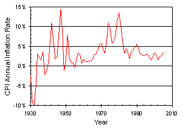
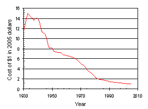
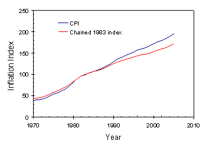

January 30, 2006
For those of us who remember the bad economic days of the 1970s, inflation is a dirty word. That was a time when prices spiraled out of control, always seeming to rise faster than income. More than anything it was the uncertainty of the time that made Americans so economically anxious. For many people, inflation remains economic enemy number one.
Inflation is defined as a sustained increase in the average prices for goods and services within some geographic area. While most of us generally think of inflation as bad, in fact it is only bad when it is unexpected, or when the rate of inflation exceeds the rate of wage growth (or rather, of my wage growth). It tends to be most harmful for the elderly (whose nearly fixed incomes don’t rise as fast as prices) and minimum wage workers (at least recently, since the minimum wage has not been increased in ten years). On the other hand, many economists see regular, small amounts of inflation as a positive sign of controlled economic expansion.

There are a number of theories about what causes inflation, but most of them can be grouped into three categories: problems on the demand side, problems on the supply side, and bad habits. On the demand side, inflation is caused by printing too much money (too many dollars chasing too few goods) – in other words, deficit spending. (This is also called Monetary Theory – inflation results when the money supply grows faster than the size of the economy.) Very low unemployment is also thought to cause this condition (for you economics groupies, look up the Phillips Curve). On the supply side, rising costs of labor, taxes, imports, or raw materials are passed on to the consumer as higher prices. The classic example of such “ supply shock inflation” is the oil embargo of the 1970s, which resulted in an annual inflation rate of 11% in 1974. Finally, bad habits (or rather, bad expectations) can also cause inflation. When workers expect inflation, they insist on wages rising at least enough to cover those expectations. That in turn causes employers to raise prices, thus fulfilling those expectations. In most periods of our economic history, and certainly today, a combination of all three of these effects is at work.
Of course, the discussion above presumes that inflation is a quantity that can be measured. In fact, there has always been (and I suspect there always will be) disagreement over the best way to measure inflation. The most commonly cited inflation measure is the Consumer Price Index (CPI), computed by the Bureau of Labor Statistics (BLS) of the United States Department of Labor (http://www.bls.gov/cpi/). In this measure, a “basket of goods” representative of what an urban consumer might regularly buy is priced and then the prices of these goods are tracked over time. It is important to note that both the prices of the goods and their quantities in the basket determine the value of the index. The quantity is very important as we shall see.
The CPI is a “base year” index (also called a Laspeyres index) because the quantities of goods are set during a base year and only changes in their prices are tracked over subsequent years. Currently, the official CPI uses a 1982-1984 average to set the base year. While conceptually simple, this base year approach has an obvious drawback: over time, the types and quantities of goods that a typical consumer might purchase will change. Thus, the index gradually gets out of date. Think about how many goods you buy today that didn’t exist in their present form in 1982. Almost all of them, I suspect.
There are a couple of ways in which an inflation index can be corrected to account for changing spending habits. The first, called a “hedonic adjustment”, looks at changes in the quality of the products in the basket. If both price and quality goes up, some fraction of the price increase is assigned to the quality increase and is therefore not counted in the index. I certainly spend more on a cup of coffee today than I did 20 years ago, but then again the coffee I drink is much better now than it was then (I admit to being something of a coffee snob, a natural consequence of my first visit to Europe in the late 1980s). American consumers have moved markedly upscale in their coffee drinking habits, and coffee companies have responded with better quality products at significantly higher prices. As one might imagine, a fair amount of judgment must go into this divvying up of price increases into value versus inflation.
A second approach is to change the quantities of goods purchased each year in response to shifting consumer spending habits. Such a measure is then called a “chained year” index (also called a Paasche index). While this certainly seems to make sense, there is a subtle problem: quantity and price are not independent. If the prices of some goods rise faster than the prices of others, consumers will buy less of the expensive goods and more of the relatively cheaper items. Over time, this “substitution bias” tends to make the actual basket of goods a consumer buys cost less than the hypothetical base year basket. Consumers are not dumb – they work hard to get the most value from their buying dollar.
It is easy to see that the base year index will overestimate the impact of inflation when different prices rise at different rates. But likewise, the chained year index will underestimate inflation. Considering an extreme example, if the price of citrus skyrockets due to bad weather in Florida, I stop buying citrus. That means a chained year index would take citrus out of the “basket” and the price increase would have no effect on the inflation index. But the rising prices were real, and had a real effect on me by changing my spending habits. Some economists compromise by using a geometric mean between chained year and base year indices, but none of these approaches are perfect.
So let’s look at some real numbers. The chart below shows the official CPI, a nominally base year index, compared to a chained year index used by the Bureau of Economic Advisors to correct gross domestic product (GDP) data for inflation ( http://www.bea.gov ).

The indices match exactly at 100 in 1983 (by design), then deviate thereafter. By 2005, the CPI says it takes $195 to buy that $100 1983 basket, but the chained index says it only takes $172. On average, the CPI showed about a 0.3% greater annual inflation rate than the chained inflation rate.
As the discussion above shows, there are some basic ambiguities about how inflation should best be measured. But some of the practical considerations can cause even bigger uncertainties in the measurements. In particular, increases in housing prices are extremely difficult to incorporate into an annual inflation number in a way that is meaningful to most people. How am I affected by rising real estate costs? If I already own my house, the answer is not at all (except for rising property taxes – but taxes that aren’t a part of purchases are not included in inflation calculations). If I rent, then those rising real estate costs are reflected in my rising rent. Thus, in any given year, the only people affected by rising house prices are first time home buyers. But rather than try to figure out how to weight rising home prices by the number of first time home buyers, the official government CPI calculations simply assume that everyone rents. Easier, but not as accurate.
So, with the CPI we have a method of calculating inflation, but with a host of difficult-to-solve problems.
Maybe the biggest problem of all, however, is that most of us simply assume that the much-reported Consumer Price Index is an adequate indicator of the cost of living.
Obviously, given the uses by economists and our government, an accurate inflation index is quite important. But I have an ulterior motive for my research into inflation metrics. When reading a period book or watching an old movie, how much is the money that they talk about worth in today’s dollars? When Rhet Butler offers to help a confederate charity by paying $100 for a dance with Scarlett, just how generous was he? When Humphrey Bogart kills in order to steal a $35,000 share of the gold treasure of Sierra Madre in 1925, just what value was he putting on his friend’s life? The inflation indices described above provide an imperfect answer to these questions, but it is better than no answer. Of course, you can always pause the movie and look up an exact number using CPI tables, or you can use one of the many inflation calculators on the web (http://data.bls.gov/cgi-bin/cpicalc.pl). But I like to have a rule of thumb that gets things about right. So here is my short table of dates, and the value of a dollar as measured in 2005 dollars.
Year |
Cost of $1 in 2005 dollars |
2005 |
$1 |
1982 |
$2 |
1970 |
$5 |
1946 |
$10 |
1933 |
$15 |
1913 |
$20 |
1865 |
$25-30 |
So there you have it. A scholarly look at the measurement of inflation for the purpose of movie trivia. There are worse ways to spend my time, I suppose, though none occur to me at the moment.
Accompanying Data
Online References
http://www.bls.gov/cpi
http://en.wikipedia.org/wiki/Inflation
http://www.investopedia.com/university/inflation
Chris Mack is a writer in Austin, Texas.